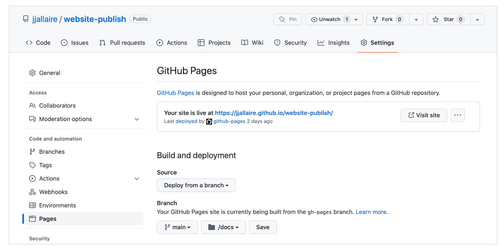

pass14wk-2: Quarto – presentations
quarto
1. 강의영상
2. Presentation
A. 깃헙계정 가입하기
B. 깃헙레포지토리
- 깃헙 레포지토리 만들기
C. 깃헙레포지토리와 서버컴퓨터의 연결
- clone
git clone <레포지토리주소>파일들이 잘 있는지 확인
- 토큰생성 및 저장
아래의 주소로 접속하여
https://github.com/settings/tokens
토큰을 생성한다. 토큰이 생성되면 토큰을 복사한뒤 저장한다.
- push
레포지토리내의 README.md 파일을 수정해보고 아래를 입력
git add .
git commit -m .
git push 이후에 유저이름 입력하고 비밀번호는 복사해둔 토큰을 사용한다. 깃헙에 제대로 업로드 되었는지 확인한다.
D. 발표자료 작성 및 배포
ref: https://quarto.org/docs/presentations/revealjs/
- 최종결과물 예시:
- s
- v
- 클론한 레포지토리에서 _quarto.yml파일을 만들고 아래를 입력
_quarto.yml
project:
type: website
output-dir: docs- 주피터 노트북을 이용하여 pt.ipynb 문서작성
- 터미널에서 아래를 입력
quarto render- local에 docs폴더 밑에 어떠한 파일들이 생성됨. 클릭해서 확인. 이 파일들을 github으로 push
git add .
git commit -m .
git push - 아래와 같이 Settings >Pages > Build and deployment > Branch 에서 경로를 main/docs로 변경하고 save
